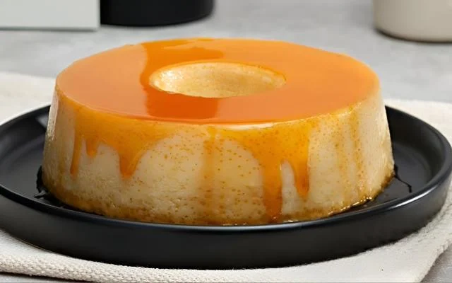

Pudim de Leite Condensado

Descrição
Aquela receita que ninguém dispensa: veja como fazer pudim de leite condensado simples e rápido, em um passo a passo de apenas 40 minutos.
Contando com apenas 5 ingredientes, essa receita de pudim de leite consensado é sucesso garantido!
Ingredientes
- 1 lata de leite condensado
- 4 ovos inteiros
- 1 xícara de leite de vaca
- 1 xícara de chá de açúcar
- 1/3 de xícara (chá) de água
Modo de Preparo
- Em uma panela, misture a água e o açúcar até formar uma calda.
- Unte uma forma com a calda e reserve.
- Bata todos os ingredientes no liquidificador e despeje na forma caramelizada.
- Leve para assar em banho-maria por 40 minutos.
- Desenforme e sirva.
Voltar para a HOME